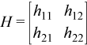

Computes the parameters for a modified Givens rotation.
Syntax
call srotmg(d1, d2, x1, y1, param)
call drotmg(d1, d2, x1, y1, param)
call rotmg(d1, d2, x1, y1, param)
Include Files
- mkl.fi, blas.f90
Description
Given Cartesian coordinates (x1, y1) of an input vector, these routines compute the components of a modified Givens transformation matrix H that zeros the y-component of the resulting vector:

Input Parameters
- d1
REAL for srotmg
DOUBLE PRECISION for drotmg
Provides the scaling factor for the x-coordinate of the input vector.
- d2
REAL for srotmg
DOUBLE PRECISION for drotmg
Provides the scaling factor for the y-coordinate of the input vector.
- x1
REAL for srotmg
DOUBLE PRECISION for drotmg
Provides the x-coordinate of the input vector.
- y1
REAL for srotmg
DOUBLE PRECISION for drotmg
Provides the y-coordinate of the input vector.
Output Parameters
- d1
REAL for srotmg
DOUBLE PRECISION for drotmg
Provides the first diagonal element of the updated matrix.
- d2
REAL for srotmg
DOUBLE PRECISION for drotmg
Provides the second diagonal element of the updated matrix.
- x1
REAL for srotmg
DOUBLE PRECISION for drotmg
Provides the x-coordinate of the rotated vector before scaling.
- param
REAL for srotmg
DOUBLE PRECISION for drotmg
Array, size 5.
The elements of the param array are:
param(1) contains a switch, flag. the other array elements param(2-5) contain the components of the array H: h11, h21, h12, and h22, respectively.
Depending on the values of flag, the components of H are set as follows:
flag = -1.0:
flag = 0.0:
flag = 1.0:

flag = -2.0:

In the last three cases, the matrix entries of 1.0, -1.0, and 0.0 are assumed based on the value of flag and are not required to be set in the param vector.